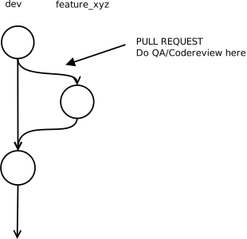
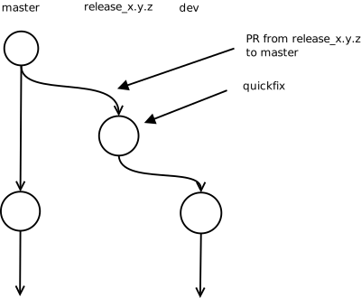
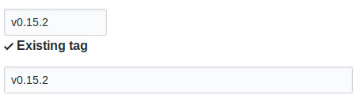
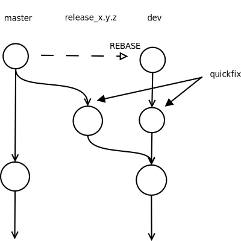
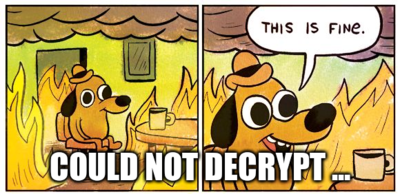
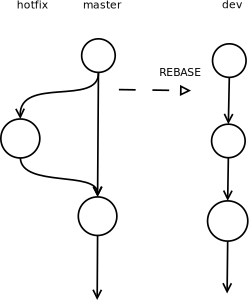

Releasing a new NewPipe version
This site is ment for those who want to maintain NewPipe, or just want to know how releasing work.

Difference between regular and hotfix release
NewPipe is a web crawler. That means it does not use a web API, but instead tries to scrape the data from the website, this however has the disadvantage of the app to brake instantly when Youtube changes something. We can not know when this happen therefore we need to be prepared when it happens, and at lease reduce our downtime as god as possible. Our whole release cycle is therefore designed around this issue.
So there is a difference between a release that is meant to introduce new features or fix minor bugs, and a version that fixes an issue that occurred because Youtube (or some other service) suddenly changed their website (mostly call this a shutdown). Lets first have a look how a regular release work, and then how the hotfix release work.
Regular releases
Regular releases are normal releases like they are done in any other app. Releases are always stored on master branch. By means the latest commit on master is always equal to the currently released version. No development is done on master. This ensures that we always have one branch with a stable/releasable version.
Feature branching
For development the dev branch is used. Pushing to dev directly however is also not allowed since QA and testing should be done before adding something to it. This ensures that also the dev version works as good a possible. So in order to change something on the app one may want to fork the dev branch and develop the changes in his own branch (this is called feature branching).
Make sure that both the dev branches as well as the master branches of the extractor and the frontend are compatible to each other. If a change is done on the API to the extractor make sure that frontend is being made compatible to these changes. If the PR that should make the frontend compatible again can not be merged please do not merge the corresponding PR on the extractor as well. This should make sure that any developer can run his changes on the fronted at any time.
Merging features/bugfixes
After being done with the feature one should open up a Pull Reuqest to the dev branch here a maintainer can do Code review and Quality Assurance (QA). If you are a maintainer please take care about the code architecture so corrosion or code shifting can be prevented. Please also prefare code quality over functionality. So in short: cool function but bad code -> no merge. We should focus on leaving the code as clean as possible.

At best you as a maintainer should build the app and put the signed apk into the description of that new pullrequest. This way other people can test the feature/bugfix and therefore help with QA. You may not need to do this every time. It is enough to do it on bigger pull requests.
After the maintainer merged the new feature into the dev branch he should add the title of the pullrequest or a summary of the changes into the release note.
Creating a new release
Once there are enough features together, and the maintainer feels like releasing he should create a new release. Here is a list of things he will want to do then. Be aware of the rule that a release should never be done on a frieday. For NewPipe this mean don't do a release if you don't have time for it!!!
- Fork the dev branch into a new release_x.y.z branch.
- Increase the version number
- Copy the release note from the github version draft into the corresponding fastlane file (see release note).
- Open up a pullrequest form the new release_x.y.z branch into the master branch.
- Create an Issue pointing to the new Pullrequest. The reason for opening an issue is that from my perception more people are reading issues then they read pullrequests. Put the release-note into this pull request.
- Build a signed release version of NewPipe using schabis signing keys. This is a release candidate (RC). Name the build apk file
NewPipe_<versionNumber>_RC1.apk. Zip it and post it into the head of the release issue. This way other people can test the release candidate. - Test and QA the new version with the help of other people
- Leave the PR open for a few days and advertise people to help testing.
While being in release phase no new pullrequests must be merged into dev branch.
This procedure does not have to be done for the extractor as extractor will be tested together with the fronted.
Quckfixes
When issuing a new release you will most likely encounter new bugs. These bugs are called regressions as they where not there before. If you notice a regression during release phase you are allowed to push fixes directly into the release branch without having to fork a branch away from it. All maintainers (people who have write access to the release branch) have to be aware that they might be required to fix regressions so plan your release on a time when you have time for coding. Do not introduce new features while being in release phase.
When you have pushed a quickfix you will want to updated the release candidate you put into the issue corresponding to the release pull request.
Increment the version number in the filename of the Release candidate. e.g. NewPipe_<versionNumber>_RC2.apk etc. Don't update the actuall version number however :P.

Releasing
Once the glories day of all days has come, and you feel like fulfilling the ceremony of releasing. This is what you will want to do. After going through the release procedure of having created a new release and maybe having done quickfixes on the new release, you will want to do these steps:
- Hit merge Pullreqest
- Create a GPG signed tag with the name
v0.x.y - Merge dev into master on the extractor
- Create a GPG signed tag with the name
v0.x.yon the extractor - Make sure the draft name equals the tag name 
- Make sure to not have forgotten enything
- Hit
Publish Release - Rebase quickfix changes back into dev if quickfixes where made

Hotfix releases

As described aboth NewPipe is a web crawler, and therefore might brake randomly. In order to keep the downtime of NewPipe as low as possible when such a shutdown happens we allow so called hotfixes.
- A hotfix allows work on the master branch instead of the dev branch.
- A hotfix MUST NOT contain any features or other bugfixes.
- A hotfix may only focus on fixing what has caused the shutdown.
Hotfix branch
Hotfixes work on the master branch. The reason for this is because dev branch might have experimental changes that have not yet been tested properly enough to be released. Master however should always be at the latest stable version of NewPipe. If this one brakes due to a shutdown you may therefore want to fix that version. Of course you are not allowed to push to master directly so you will have to open up a hotfix branch. If someone else is pushing a hotfix into master, and it works this can be considered as hotfix branch as well.
Releasing
If you fixed the issue and found it to be tested and reviewed well enough you man release. Here you don't need to undergo the full release procedure of a regular release, which might take up to a few days. Keep in mind that if the hotfix might turn out to be broken after release you want to release another hotfix. Here it is important to release fast, and after all a less broken version of NewPipe is better then a full broken version ¯\_(ツ)_/¯. This is what you will want to do when releasing a hotfix version.
- Hit merge Pullreqest
- Create a GPG signed tag with the name
v0.x.y - Merge dev into master on the extractor
- Create a GPG signed tag with the name
v0.x.yon the extractor - Create a new release draft and write the down the fix into the release note
- Copy the release note into the fastlane directory of releases
- Increment the small minor version number and the
versionCode - Hit
Publish Release - Rebase the hotfix back into dev branch

Versioning
Versioning NewPipe is simple.
- Major: The major version number (the number before the first dot) was 0 for years. The reason for this changed over time. First I wanted this number to switch to 1 once NewPipe was feature complete. Now I rather think of incrementing this number to 1 once we can ensure that NewPipe runs stable (part of which this documentation should help). After this (2 and beyond) well god knows what happens if we ever reach 1 ¯\_(ツ)_/¯ .
- Minor: The minor version number (the number after the first dot) will be incremented if there is a major feature added to the app.
- Small Minor: The small minor (the number after the second dot) will be incremented if there are just smaller bug fixes or features added to the app.
Versioning the extractor
The extractor is always released together with the app, therefore the version number of the extractor is the same as the one of the app.
Version code
In android an app can also have a versionCode. This code is a long integer and can be incremented by any value to show a device that a new version is there.
For NewPipe the version code will be incremented by 10 regardless of the change of the major or minor version number. The version codes between the 10 steps
are reserved for our internal fdroid build server.
Release notes
Release notes should give the user an idea of what was changed on the app. The release nodes for NewPipe are stored in the github draft for a new release. When a maintainer wants to add change to the release note, but there is no draft for a new version he should create one.
Changes can be categorized into three types.
- New: New features that god added to the app.
- Improved: Improvements to the app, or already existing features
- Fixes: Bugfixes
When releasing a new version of NewPipe, before actually hitting release the maintainer should copy the release note from the draft and put it into a file called
<versionCode>.txt (whereas <versionCode> needs to be the version code of the comming release). This file must be stored in the direcotry /fastlane/metadata/android/en-US/changelogs. This way fdroid will later be able to show the
changes done on the app.